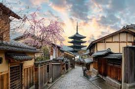

Tokyo - A Essencia do Japão
Tóquio é a cidade que reflete as cores do Japão. No Japão, os lugares para visitar são infinitos e explorar tudo numa só viagem seria sempre impossível. Mas a popular cidade de Tóquio ainda merece o primeiro lugar no seu itinerário, graças à sua cultura de anime e atrações de classe mundial. E se os locais históricos não impressionam muito, a cidade também tem um ótimo cenário gastronômico! Este é sem dúvida um dos melhores lugares para se visitar no Japão.